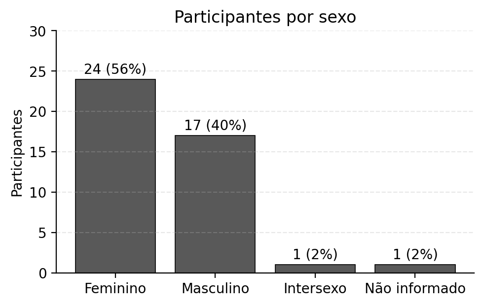
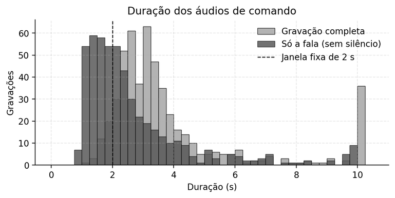
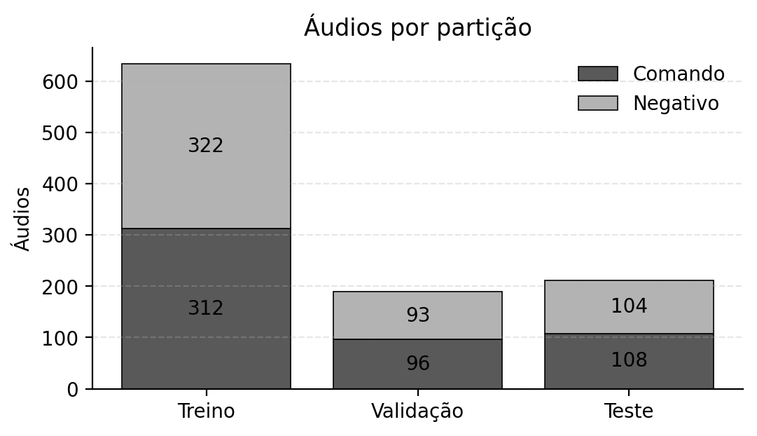

A solução
Nosso próprio Dataset
Por meio de uma rápida pesquisa solicitamos gravações rápidas para os voluntários com 6 frases diferentes.
Adicionando ruídos fornecidos pelo Dataset MUSAN-NOISE, temos um excelente ponto de partida para o projeto.

Participantes do Experimento
Demografia e Distribuição por Idade e Sexo
O experimento contou com 43 participantes, sendo 24 mulheres e 17 homens, com uma idade média de 42 anos. Os grupos mais numerosos estavam na faixa de 18 a 24 anos e 45 a 59 anos.


O Conjunto de Dados
516 gravações e 519 falas fora de escopo
Este conjunto de dados consiste em 516 gravações de comandos, incluindo 519 falas fora do escopo, com adição de ruídos do MUSAN a diferentes níveis de SNR para análise robusta.



O que é MFCC
Transformação de som
Os Mel Frequency Cepstral Coefficients (MFCC) transformam som em números, descrevendo timbre através de etapas como quadros, FFT, filtros Mel e logaritmo.


O ruído pesa menos na CNN
A rede com a classe “fora” (em vermelho) mantém o reconhecimento mesmo a 0 dB (teste)